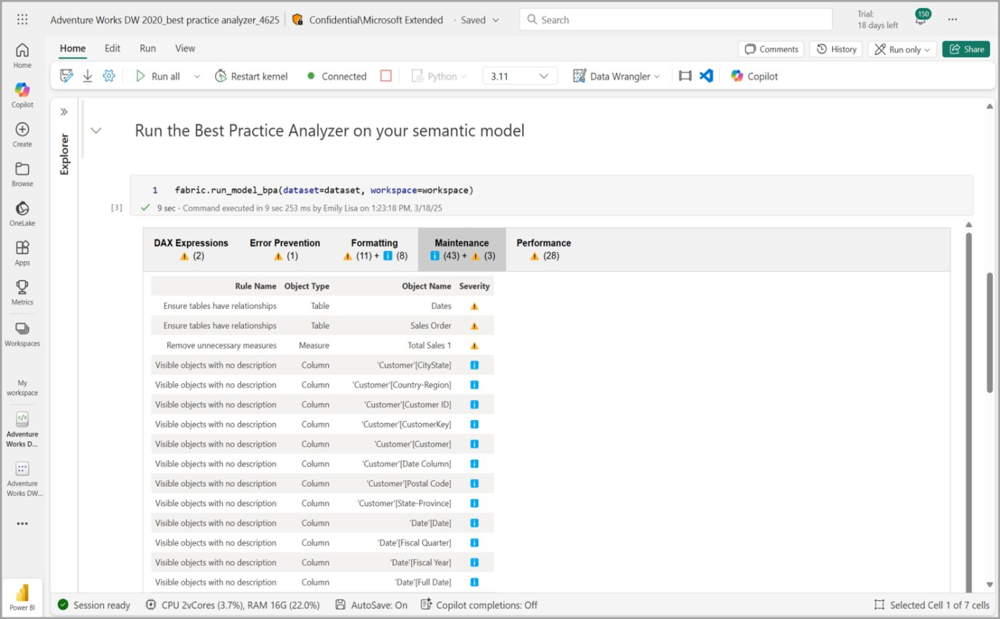

Elevate Your Data Models: Best Practice Analyzer in Microsoft Fabric Notebooks
Logeshkumar Sivakumar · July 1, 2025 · 3 min read

As data professionals, we know that a well-designed semantic model is the backbone of reliable analytics. But how do you ensure yours is truly performant, scalable, and easy to maintain before it reaches your users? Enter the Best Practice Analyzer (BPA) in Microsoft Fabric!
What is the Best Practice Analyzer?
The Best Practice Analyzer (BPA) is a powerful feature designed to scrutinize your semantic models for adherence to industry best practices. It meticulously evaluates your model against over 60 rules, all curated by Microsoft experts and the vibrant Fabric Community. While it started as a key component of Tabular Editor, the BPA's seamless integration into Microsoft Fabric notebooks via the Semantic Link Library truly streamlines its use for all data professionals.

Why You'll Love the BPA: Key Benefits
Integrating the Best Practice Analyzer into your workflow brings a multitude of advantages:
- Enhanced Performance & Design: Get actionable suggestions that directly refine your semantic model's design and significantly boost its performance.
- Categorized Insights: Suggestions are logically grouped into categories like Performance, DAX Expressions, Error Prevention, Maintenance, and Formatting, making it simple to prioritize and address issues.
- Continuous Learning: Reviewing the BPA's rules offers invaluable insights into Power BI best practices, deepening your understanding of effective model development.
- Efficiency & Cost Reduction: By pinpointing and helping fix flaws, the BPA contributes to a reduced model size, optimized resource usage, and tangible cost savings.
How to Implement in Fabric Notebooks
Leveraging the BPA in Fabric notebooks is incredibly straightforward. You can run the analyzer directly against your semantic models using the sempy.fabric library. Here's the Python code snippet you'll use in your notebook:
Import the Semantic Link library
import sempy.fabric as fabric
dataset = "Dataset-name" # Enter the name of the semantic model
workspace = "Workspace-name" # Enter the workspace name in which the semantic model existsRun the Best Practice Analyzer
fabric.run_model_bpa(dataset=dataset, workspace=workspace)What to Expect: BPA Outcomes
Upon execution, the BPA delivers a detailed summary of its findings. It highlights "violations" of best practices, often categorized by severity, so you can quickly zero in on critical areas. The improvement suggestions provide clear guidance on:
- Unused fields and measures: Identify and eliminate clutter for leaner models.
- Hardcoded DAX values: Replace static values with dynamic expressions for flexibility.
- Redundant calculated columns: Optimize using better DAX logic to improve efficiency.
- Inconsistent naming conventions: Standardize for enhanced readability and collaboration.
- Inefficient DAX: Pinpoint non-performant logic or dependencies that are slowing you down.
- Poor table organization: Improve your model's structure and data flow.
By integrating the Best Practice Analyzer into your Microsoft Fabric notebook workflows, you empower your team to build more robust, efficient, and reliable data models, ultimately driving better, data-driven decisions.
Want to learn more? Check out these resources:
- Use notebooks with a semantic model - Power BI | Microsoft Learn
- What is semantic link? - Microsoft Fabric | Microsoft Learn
- Notebook Gallery - Microsoft Fabric Community
Have you used the Best Practice Analyzer in Fabric Notebooks yet? Share your experiences and insights in the comments below!
💬Let's discuss how this powerful tool is helping you refine your data models and drive better decision-making.
#MicrosoftFabric #DataAnalytics #PowerBI #DataModeling #BestPracticeAnalyzer #DataScience #DataEngineering #FabricNotebooks #SemanticLink #DataQuality #BusinessIntelligence #Microsoft #Analytics #DataStrategy #DAX #Optimization #TechTips